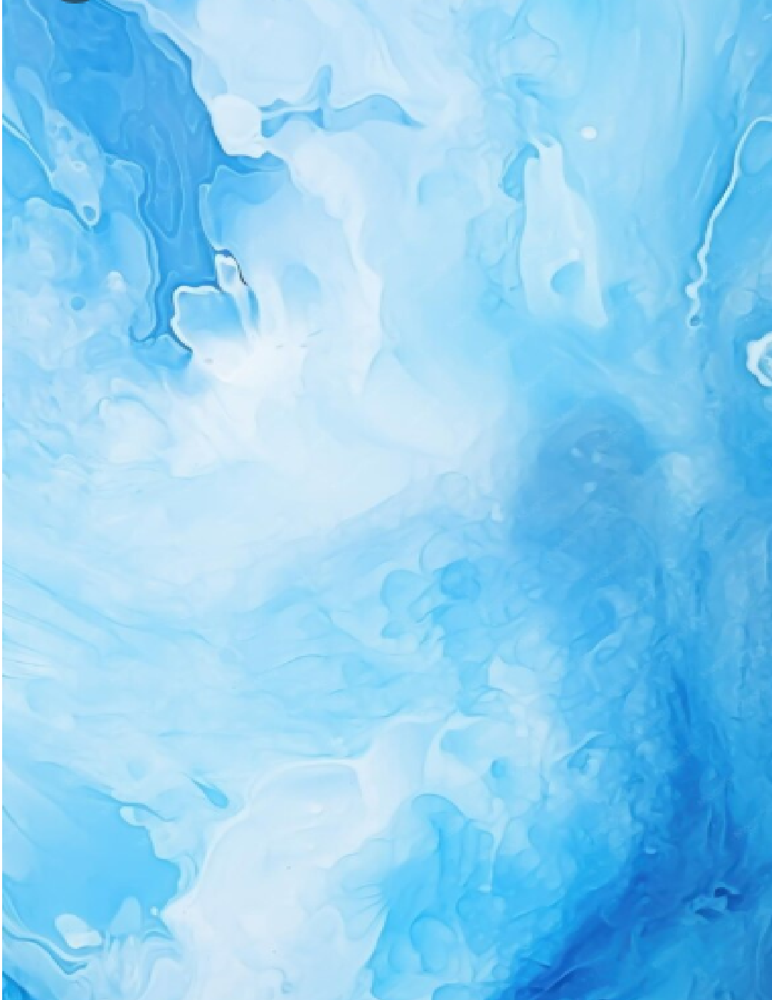
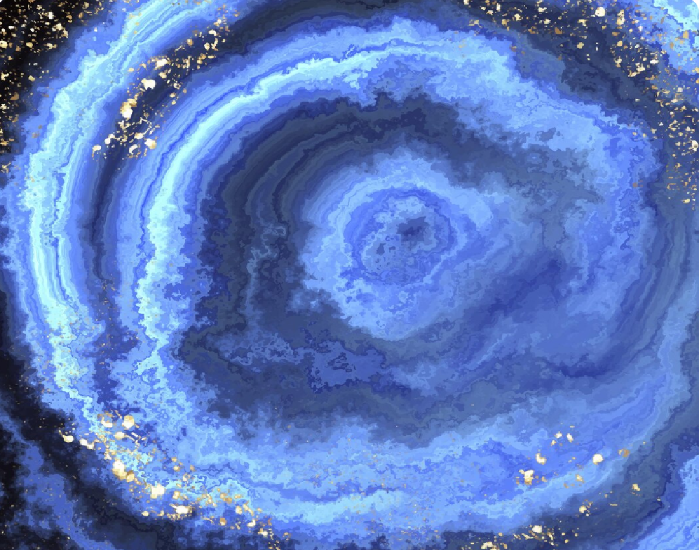
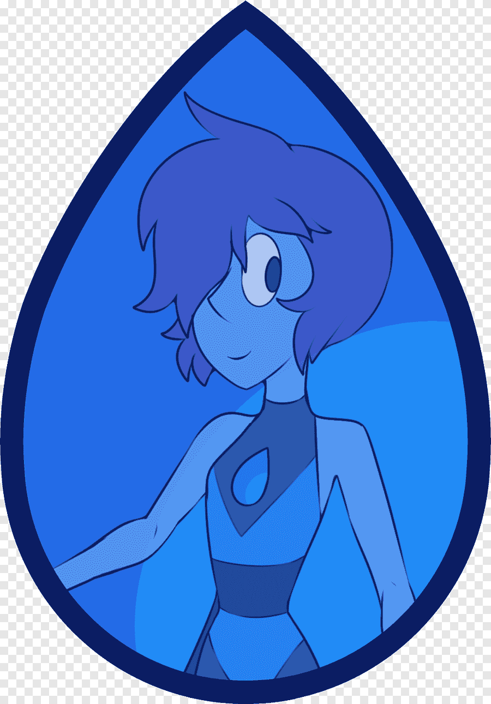
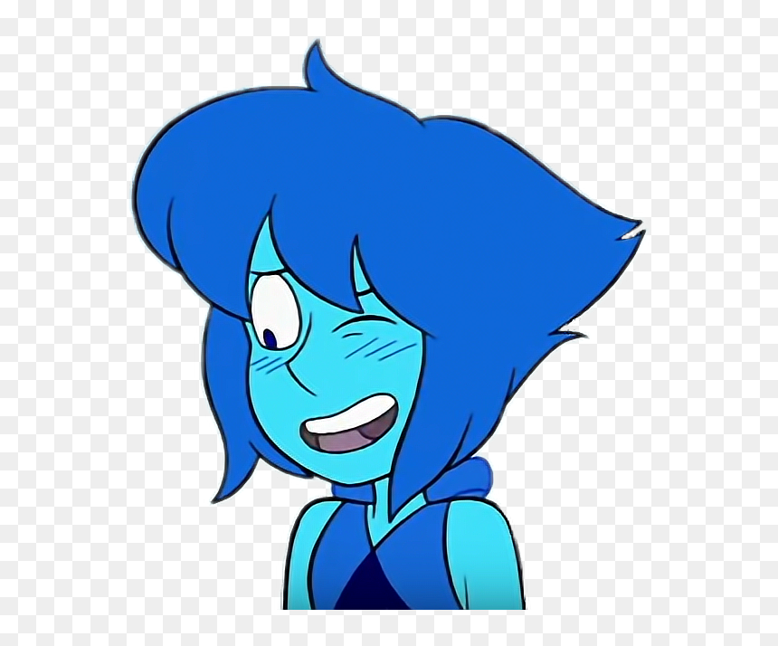

A História de Lapis
A história de Lapis Lazuli em Steven Universe é marcada por sua luta contra o trauma do Planeta Terra e sua busca por amizade e compreensão. Ela é uma personagem complexa, que enfrenta desafios emocionais e sociais, enquanto se torna uma Crystal Gem e se envolve em várias aventuras com Steven e as outras Gems. Lapis é conhecida por sua habilidade de manipular a água com a mente e por sua capacidade de memorização, que a torna uma figura central na série.
Fotos Lápis



